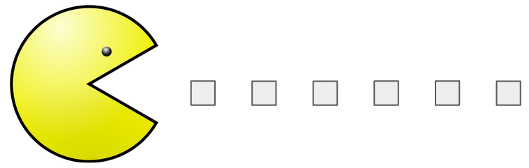
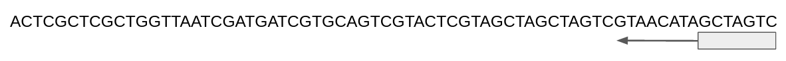

Rogner les reads#
Pourquoi ?#
Une étape de pré-processing
Les reads en entrée sont rognés afin d’éliminer des extrémités de mauvaise qualité.
En fonction de la capacité de l’outil à faire des alignements locaux ou globaux et de la qualité intrinsèque des données, cette étape peut être cruciale.
Risque: peu de reads alignés
Quelques logiciels existants
Sickle-trim (sliding window-based trimming)
FASTX-Toolkit (cut a defined number of nucleotides)
Trimmomatic
Cutadapt

Sickle#
Principe#
Objectif:
Supprimer les extrémités de mauvaise qualité.
Solution:
Parcourir le read avec un fenêtre coulissante de droite à gauche. Calculer la qualité moyenne dans chaque fenêtre
Si la valeur de qualité chute en dessous d’une valeur seuil q, déléter l’extrémité 3’.
Si la taille restante du read est inférieure à une longueur seuil l, déléter le read.

L’interface de sickle#
Sickle contient 2 sous-commandes: pe (paired-end sequence trimming) et se (single-end sequence trimming)
module load sickle-trim/1.33
?2004h
sickle -h
Usage: sickle <command> [options]
Command:
pe paired-end sequence trimming
se single-end sequence trimming
--help, display this help and exit
--version, output version information and exit
# Obtenir de l’aide sur la sous-commande se.
sickle se --help
Usage: sickle se [options] -f <fastq sequence file> -t <quality type> -o <trimmed fastq file>
Options:
-f, --fastq-file, Input fastq file (required)
-t, --qual-type, Type of quality values (solexa (CASAVA < 1.3), illumina (CASAVA 1.3 to 1.7), sanger (which is CASAVA >= 1.8)) (required)
-o, --output-file, Output trimmed fastq file (required)
-q, --qual-threshold, Threshold for trimming based on average quality in a window. Default 20.
-l, --length-threshold, Threshold to keep a read based on length after trimming. Default 20.
-x, --no-fiveprime, Don't do five prime trimming.
-n, --trunc-n, Truncate sequences at position of first N.
-g, --gzip-output, Output gzipped files.
--quiet, Don't print out any trimming information
--help, display this help and exit
--version, output version information and exit
Exercice#
1- Créez un répertoire trimmed au même niveau dans l’arborescence que fastq
2- Placez vous dans ce répertoire
3- Invoquez l’aide de sickle (se)
4- Construisez une commande qui combine les options suivantes :
Fournissez à sickle le fichier d’entrée siNT_ER_E2_r3_chr21.fastq.
Qualité de type “Sanger”, seuils de qualité et de longueur tous deux à 20.
Demandez à
sickle sede produire un fichier de sortie que vous nommerez siNT_ER_E2_r3_chr21_trim.fastq et qui devra être créé dans le dossier trimmed.Rediriger la sortie standard dans un fichier que vous nommerez siNT_ER_E2_r3_chr21_sickle.log, placé dans le dossier
trimmed.
5- Comptez le nombre de lignes présentes dans les fichiers fastq avant et après utilisation de sickle (commande wc -l)
6- Lisez le contenu du fichier log. Obtenez-vous le même résultat ?
Solution#
# On remonte d’un niveau dans l’arborescence
cd /shared/projects/2325_ebaii/coursLinux/demo/chip-seq/
# On créé un répertoire
mkdir trimmed
# On se déplace dans ce répertoire
cd trimmed
# On lance sickle
# &> redirige la sortie d’erreur et la sortie standard dans un fichier
sickle se -f ../fastq/siNT_ER_E2_r3_chr21.fastq -t sanger -o siNT_ER_E2_r3_chr21_trim.fastq &> siNT_ER_E2_r3_chr21_sickle.log
# Le nombre de lignes présentes dans les fichiers fastq
# Données brutes
wc -l ../fastq/siNT_ER_E2_r3_chr21.fastq
1183584 ../fastq/siNT_ER_E2_r3_chr21.fastq
# Données nettoyées
wc -l siNT_ER_E2_r3_chr21_trim.fastq
1181352 siNT_ER_E2_r3_chr21_trim.fastq